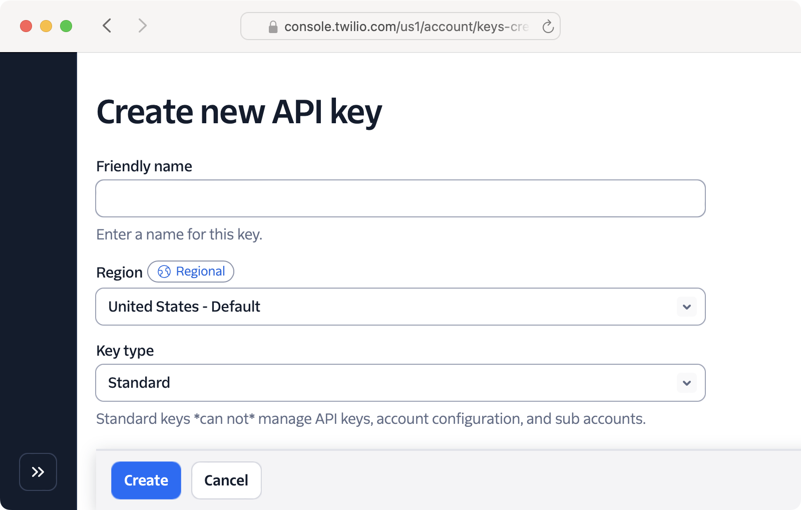
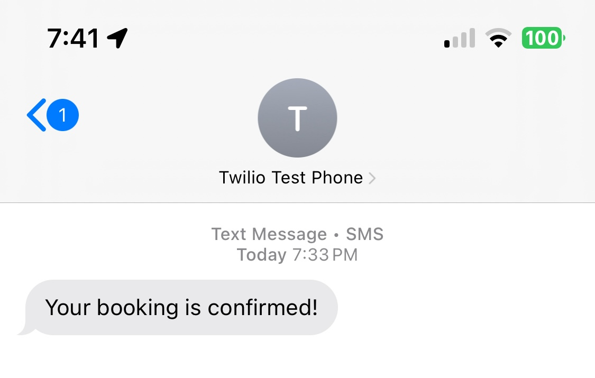

<p>We use the Twilio API to send messages and confirm they were delivered:</p>
<mark>I should change from ENV to Rails.app.credentials</mark>

<ol style="padding-left: 0; list-style-position: inside">
  <li style="margin-top: 0.75rem"><a href="#"><span class="badge rounded-pill bg-secondary-subtle">▶︎</span></a> Add the <a href='#'>twilio-ruby</a> gem to the <code>Gemfile</code>.</li>
  <li style="margin-top: 0.75rem"><a href="#"><span class="badge rounded-pill bg-primary">▶︎</span></a> Add a callback to <code>Booking</code> to send an SMS on creation.</li>
  <li style="margin-top: 0.75rem"><a href="#"><span class="badge rounded-pill bg-secondary-subtle">▶︎</span></a> Copy the Twilio API credentials into your local environment.</li>
</ol>

<br>

<div class='row row-cols-1 row-cols-md-2 g-4 mb-3 text-center'>
  <div class='col'><div class='card text-bg-success'>
    
  </div></div>
  <div class='col'><div class='card text-bg-success'>
    
  </div></div>
</div>
